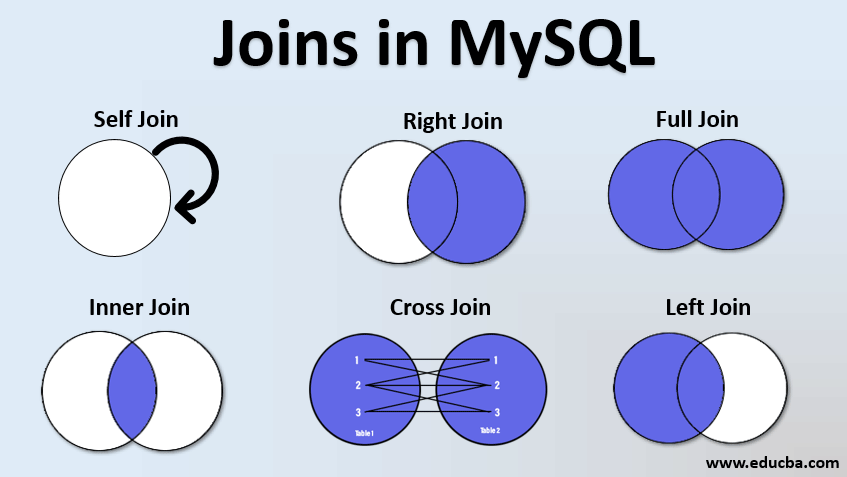

BLOGS
Statistics For Data Analyst
Statistics is the branch of mathematics concerned with the collection, analysis, interpretation, presentation, and organization of data. Statistics provides methods for making inferences and predictions about a population based on a sample of the population
Statisitc For Data Analyst ArticleStatistics For Data Analyst Part-2
Statistics is the branch of mathematics concerned with the collection, analysis, interpretation, presentation, and organization of data. Statistics provides methods for making inferences and predictions about a population based on a sample of the population
Statistics for Data Analsyt Part-2 LinkWindow Function in SQL
In SQL, a window function is a type of function that performs a calculation across a set of rows that are related to the current row. It allows you to perform calculations over a specific window or subset of rows without grouping or aggregating the data to a single value. Window functions are typically used in conjunction with the OVER clause
Window Function in SQL ArticleJOINS IN SQL
The SQL Join help in retrieving data from two or more database tables. The tables are mutually related using primary keys and foreign keys.
Joins IN SQL ArticleGROUP By CLAUSE IN SQL

The GROUP BY used to group rows from the table. And it has the same values as summary rows. For example, find the number of customers in each country, The GROUP BY is often used with aggregate functions like (COUNT, MAX, MIN, SUM, AVG) to group the result-set by one or more columns.
Group by clause IN SQL ArticleFor More Articles